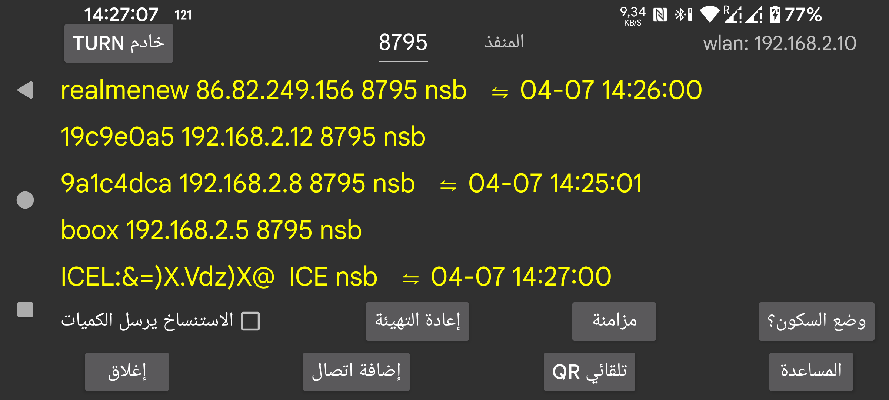

ar be de es fr hi it nl pl pt ru sv tr uk uz zh en
يمكنك إرسال البيانات إلى جهاز آخر أو استقبالها من جهاز آخر. ويمكنك الاتصال بجهاز Android يعمل عليه Juggluco لعرض البيانات بالطريقة نفسها المعروضة هنا. وبعد استلام بيانات القراءات، يستطيع جهاز الاستنساخ أيضًا الاتصال بالمستشعر عبر البلوتوث. ولضمان ألّا يتصل بالمستشعر إلا جهاز واحد فقط، يتم إيقاف خيار القائمة اليسرى → المستشعر → استخدام البلوتوث تلقائيًا عندما تصل قيم البث عبر IP/TCP.
في هذه الشاشة، بعد wlan، يظهر عنوان IP المحلي لشبكة الواي فاي الخاصة بهذا الجهاز. ويجب إدخال هذا العنوان على الجهاز الآخر ضمن شبكتك المنزلية الذي تريد الاتصال به، أو على المودم إذا كان الاتصال عن بُعد.
بعد المنفذ يمكنك تغيير منفذ TCP الذي يستمع عليه هذا التطبيق للاتصالات.
بالنقر على إضافة اتصال يمكنك تحديد الأجهزة التي تريد الاتصال بها وكيفية إجراء الاتصال.
غالبًا ما تتعطل الاتصالات الشبكية الموثوقة على Android بسبب أنواع مختلفة من تحسينات البطارية وقيود العمل في الخلفية. والضغط على وضع Doze يساعدك على تغيير ذلك.
إذا كان Juggluco يعمل في وضع الاستنساخ، أي يستقبل قيم الغلوكوز من جهاز آخر يشغّل Juggluco، فيمكنك الضغط على التنبيهات لفتح مربع حوار يتيح لك تحديد تنبيهات انخفاض الغلوكوز وارتفاعه والإشعارات المرتبطة بها.
الاستنساخ يرسل الكميات: إذا كان التطبيق يستقبل كميات الدواء والطعام والنشاط من هذا التطبيق عند تشغيله على جهاز آخر، فلا ينبغي لك إضافة هذه المعلومات نفسها هنا أو تعديلها. وتفعيل هذا الخيار يجعل ذلك غير ممكن.
مزامنة يرسل البيانات الجديدة إلى جهاز متصل إذا كان متاحًا، أو يطلب بيانات جديدة.
إعادة التهيئة: يغلق الاتصال الحالي وينشئ اتصالًا جديدًا.
QR تلقائي: ينشئ اتصالًا لإرسال جميع البيانات من هذا الهاتف إلى Juggluco على هاتف آخر. ويجب أن يقوم الهاتف الآخر بمسح رمز QR من خلال القائمة اليسرى → صورة.
واي فاي (على WearOS فقط): عندما لا يكون هذا الخيار مضبوطًا، يقوم WearOS بإيقاف Wi‑Fi تلقائيًا بعد بعض الوقت للحفاظ على البطارية، ويحوّل Juggluco الاتصال بين الهاتف والساعة إلى البلوتوث. وعند تشغيله، يُطلب من WearOS إبقاء Wi‑Fi قيد التشغيل، وقد يستغرق وقتًا أطول قبل إيقافه، لكن قد يحدث الإيقاف رغم ذلك. وعادةً لا تكون هناك حاجة إلى هذا الخيار، كما ترى الجهة المصنِّعة لـ WearOS أن تشغيل Wi‑Fi قد يؤدي إلى زيادة كبيرة في استهلاك البطارية.
تُعرض الاتصالات الموجودة في قائمة، مع إظهار التسمية، ومنفذ IP، والشهر واليوم ووقت آخر مزامنة ناجحة.
ويُختصر أسلوب استخدام الاتصال كما يلي:
n: الكميات
s: القراءات
b: البث (البلوتوث)
r: الاستلام
لمزيد من المعلومات عن اتصالات الاستنساخ اقرأ المساعدة تحت إضافة اتصال، وانظر أيضًا إلى https://www.juggluco.nl/Juggluco/index.html#mirror.
يمكنك تشغيل تطبيق Juggluco الخاص بـ Android على كمبيوتر يعمل بنظام Windows أو Macintosh أو Linux بمساعدة مُحاكي Android، مثل Genymotion. وإذا كنت تستخدم Linux، مثل Ubuntu داخل MS Windows، فيمكنك أيضًا استخدام Waydroid. يتلقى Juggluco داخل المُحاكي البيانات عبر اتصال استنساخ من هاتف Android متصل بالمستشعر. وفي مُحاكي Android Studio وGenymotion يمكن محاكاة حركة القرص بإصبعيْن، أي تحريك إصبعين باتجاه بعضهما أو بعيدًا عن بعضهما، بالضغط على مفتاح Control أثناء تحريك مؤشر الفأرة. لا يدعم Waydroid ذلك، لكن Juggluco يوفّر هذه الوظيفة داخله وحده.